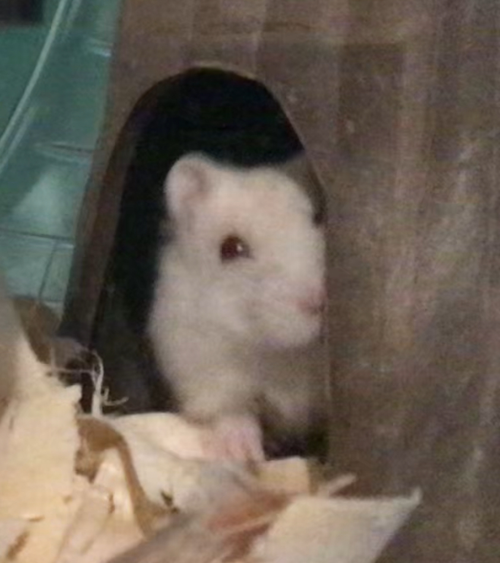

WELCOME TO CATGALIAO!
to Cathub Pippin's Vlog index of versionscheck out my updates below
Credits Casey Alexandra Mckay-Felix 2023-2026.
updates
spring break is here! the trees are bursting with flowers (and pollen) and pepper is doing amazing. I have spent some time observing her behavior and I just put some toilet paper with my scent on it in her cage. It's non-harmful to hamsters and will help Pepper get used to me. Even though getting Pepper wasn't exactly recent; I haven't been interacting much with her. she has been hiding in her nurrow and eating ALL her food! anyways, thanks to the people who are viewing this article, sayonara~ have a good day!
Old Updates (If you haven't caught up)
I am very sad to announce that blossom is dead. she fell down three flights of stairs and the last time I saw her was on november 29th. I'm sorry I haven't been updating the webstite, It makes me melancholy to look at "blossom's playtime corner". I do have a new hamster, Pepper coupon. I will provide photos soon. Have a great day.
R.I.P Blossom. 10/16/24-12/4/24
UPDATE: adding pet pictures: see later
Website version beta
page last updated 7:35 PM EST on 4/9/25
about catgaliaoEmail techiddie858@proton.me to subscribe. I will write back. this email may be down, if so I will update it.
.